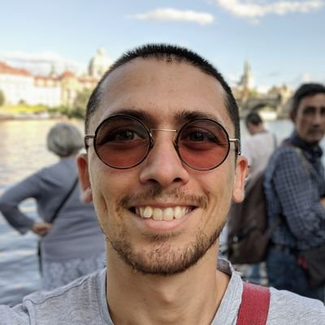

Mathematician.
I am an EPSRC Research Fellow at the University of Leeds within the representation theory group. Previously, I was a postdoc at the University of Connecticut and I received my PhD from the University of Toronto under the supervision of Ragnar-Olaf Buchweitz. There I was a member of the Homological Methods Seminar and it shaped my research interests: representation theory, commutative algebra, homological algebra etc. After Ragnar passed away, I started working with Graham Leuschke while staying officially as a graduate student at the University of Toronto under the supervision of Joel Kamnitzer. I am an organizer of UCGEN and I used to live at AdIMOM. My email address is o[dot]esentepe[at]leeds[dot]ac[dot]uk